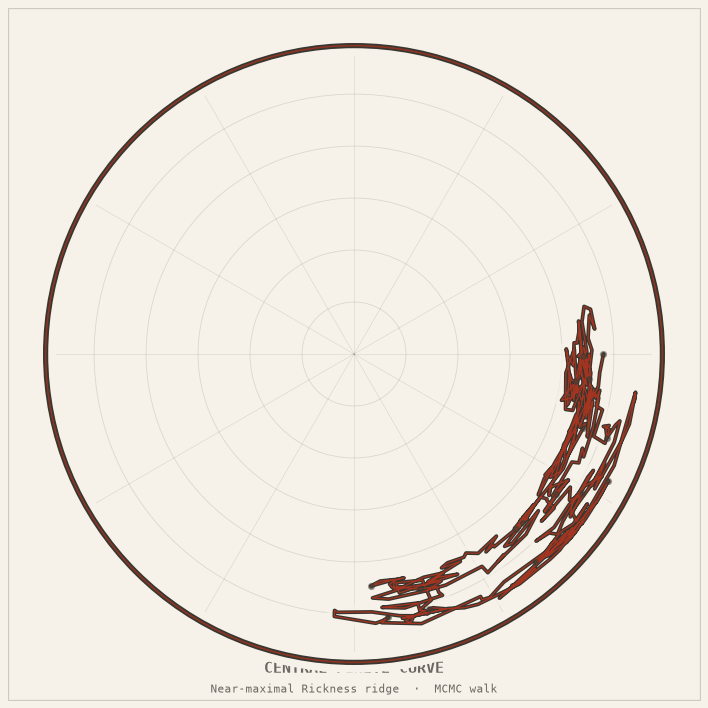

Central Finite Curve simulation in R⁸
An infinite-but-bounded region of the multiverse, carved out as a src-layout geometry package — N=20,000 points in R⁸, a Rickness ridge, and a Metropolis portal-gun walk.

The idea
The show describes the Central Finite Curve as an arc through the multiverse containing all universes where a Rick is the smartest being. This package builds a computational model of that arc: a high-dimensional point cloud in R⁸ equipped with a scalar “Rickness” score, and the CFC defined as the super-level set of near-maximal Rickness.
Four algebraic constraints pin approximately four of the eight degrees of freedom, so the CFC is a roughly 4-dimensional sub-manifold of R⁸. A hard-constraint Metropolis walk simulates the Portal Gun moving through the CFC.
The Möbius-strip Central Finite Curve model explores the same fictional concept as a traced zero set with negative Gaussian curvature.
The mathematics
N = 20,000 points sampled in R^8
Rickness(x) = tanh(std(x)) + normalised_Shannon_entropy(x) - 6 × penalty(x)
Four algebraic constraints: each pins ~1 DOF → CFC is ~4-D sub-manifold
CFC = { x : rickness(x) ≥ max_rickness - ε }
= 1,385 universes out of 20,000 (6.925%)
max_rickness ≈ 1.5956
Walk score range: 1.3957 … 1.6376
Portal-gun walk: hard-constraint Metropolis, 21.8% acceptance, 6001 trajectory points
Projection to 2-D: deterministic power-iteration PCA (no numpy required for core)
How it works
- The point cloud is generated with a fixed seed for reproducibility. Each dimension represents one abstract property of a universe.
- The Rickness score combines dispersion (tanh of standard deviation), information content (Shannon entropy), and an algebraic constraint penalty.
- The Metropolis walk proposes steps in R⁸ and accepts only those that stay within the super-level set, simulating constrained travel through the CFC.
- PCA projection to 2-D uses power iteration rather than numpy’s SVD, keeping the core module dependency-free.
- 40 pure-stdlib tests; 72 full tests with numpy check PCA parity to 1e-6.
Central Finite Curve FAQ
What is the Central Finite Curve?
In Rick and Morty, the Central Finite Curve is the part of the multiverse containing universes where a Rick is the smartest being. This project turns that fictional idea into a reproducible mathematical simulation.
How does this simulation model the Central Finite Curve?
It samples 20,000 points in eight-dimensional space, scores each universe for Rickness, keeps a near-maximum super-level set, and runs a constrained Metropolis walk through that set.
Figures & animations
Four panels — composite animation
The CFC super-level set, Rickness distribution, portal-gun walk trajectory, and PCA projection, animated together.
CFC rotating (3-D PCA projection)
The 1,385-universe CFC rotating in a 3-D PCA subspace of R⁸. The walk trajectory is highlighted in red.
Portal-gun walk animation
The Metropolis walk stepping through the CFC universes, accepting 21.8% of proposed moves over 6,001 steps.

2-D PCA projection (static)
The CFC as a 2-D PCA projection of the 8-dimensional point cloud. Each dot is a universe; coloured dots are in the CFC.
Run it
git clone https://github.com/caelum0x/awesome-mad-projects.git cd awesome-mad-projects/infinity-lab pip install -e packages/central_finite_curve python -m central_finite_curve python -m pytest packages/central_finite_curve/tests -v